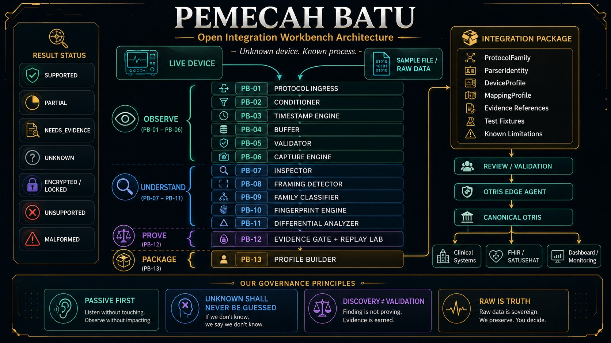

OPEN INTEGRATION WORKBENCH ARCHITECTURE
Unknown device.
Known process.
OTRIS tidak menebak apa yang tidak diketahui. Status UNKNOWN adalah tempat penemuan dimulai.

OBSERVE PB-01-PB-06 → UNDERSTAND PB-07-PB-11 → PROVE PB-12 → PACKAGE PB-13 • RESULT: SUPPORTED, PARTIAL, UNKNOWN, ENCRYPTED
PB-01 → PB-13 PIPELINE
PB-01 PROTOCOL INGRESS - Menangkap komunikasi apa adanya
PB-06 CAPTURE ENGINE - Merekam bukti mentah
PB-12 EVIDENCE GATE + REPLAY LAB - Hanya yang punya bukti boleh lanjut
PB-13 PROFILE BUILDER - ProtocolFamily, ParserIdentity, DeviceProfile, MappingProfile, Evidence, Test Fixtures